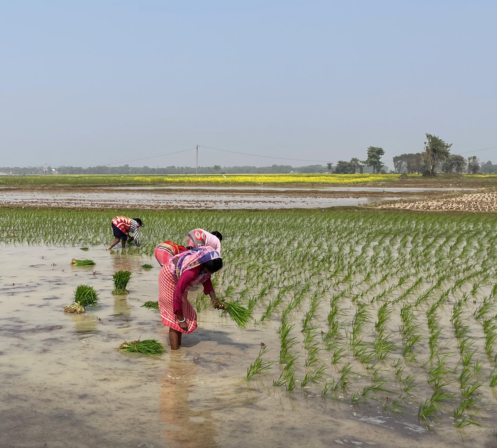

Measured, not modelled.
A measurement-first approach quantifies emission reductions upfront, using methodologies endorsed by leading carbon registries, including Verra.
How SuPad works
Bharati Environment and Sustainable Technology Solutions
We develop practical technology solutions that support sustainable development and greenhouse gas mitigation for smallholder farmers.
Rice cultivation requires a global transformation to cut its carbon footprint while harnessing opportunities from carbon markets. We take a bold, science-driven, and farmer-centric approach, ensuring the highest confidence in our measurements and outcomes.
Partner with us
A measurement-first approach quantifies emission reductions upfront, using methodologies endorsed by leading carbon registries, including Verra.
How SuPad worksA farmer-centric, high-integrity design, with a network of 70+ NGOs and FPOs already organised to implement at scale.
Start a conversationRegionally tailored practices with demonstrated yield benefits, and a fair share of carbon revenue flowing directly to farmers.
Meet the teamOur approach
Carbon projects can only succeed when GHG-reducing practices are practical, profitable, and grounded in what farmers can truly adopt. We design our projects from the bottom up—driven by science but guided by what works for farmers. If it benefits them, we make it happen.
In each region, we have identified lead farmers who have successfully adopted improved practices resulting in higher yields. These practices were then fine-tuned for maximum emission reduction potential. The final set of recommended practices is simple, regionally tailored, and has already demonstrated tangible yield benefits. Thus, the adoption process remains farmer-centric and firmly grounded in local agronomic and socioeconomic conditions.
While technology solutions are expanding rapidly worldwide, smallholder farmers in India and beyond still need practical ways to close yield gaps, restore agroecosystem health, and improve incomes. We deploy technology only where it adds real value—keeping projects lean, efficient, and focused on farmer profitability.
The technologyWhile global efforts rightly target methane reduction in rice paddies, rising nitrous oxide emissions—especially under alternative drainage and high nitrogen use—can offset those gains. We have developed farmer-ready practices that cut both methane and nitrous oxide, unlocking greater carbon reduction potential from the latter.
Our team is led by scientists with decades of on-ground experience. Our methodologies are endorsed by leading carbon registries, including Verra. With strong capabilities in GHG measurement, market solutions, and robust, cost-effective monitoring systems, our projects command premium value in the carbon market.
Meet the teamFrom the field


Where we work
New initiatives are emerging in Uttar Pradesh, Chhattisgarh, and Odisha. We actively welcome partners to help scale this effort across regions.
The network of 70+ NGOs
The network of NGOs and FPOs. Each partner has demonstrated at least two decades of on-ground development experience in sustainable agriculture and agri-business development.
Our NGO partners, currently organized into Tamil Nadu and Karnataka chapters, are already well-versed in implementing large-scale, rigorous projects—effectively meeting the first prerequisite for any carbon mitigation initiative.
We aim to set the benchmark for farmer-centric, credible, and high-integrity carbon credit projects that create shared benefits for all. Through successful demonstrations, we seek to inspire collective progress across sectors and among carbon project developers—advancing the urgent global goals of carbon mitigation and sustainable growth for farming communities.